In the section "Writing templates", you've learned how to write pod statements (if, for). Every pod statement is linked to a given part of the pod template (a text paragraph, a title, a table, a table row, etc) and conditions how this part is rendered in the result (the if statement, for example, renders the part only if the related condition is True). This way to work has its limits. Indeed, you can't insert what you want into the result: you are forced to use the part of the document that is the target of the statement. Of course, in this part, you can still write funny things like Python expressions and statements, but it may not be sufficient.
This is why a special from clause may be added to every pod statement. A statement containing such a clause will replace the content of the targeted document part by the result of the from clause. This clause must specify a Python expression that must produce a valid chunk of ODT content.
In the example below, the statement has a from clause that produces a simple paragraph containing 'Hello'.
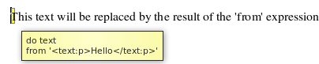
In the result, the targeted paragraph has been replaced by the chunk of odt content specified in the from expression. Note that the from clause MUST start on a new line in the note. Else, it will be considered as part of statement and will probably produce an error.
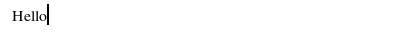
Surprise! This statement is neither a 'if' not a 'for' statement... It is a "null" statement whose sole objective is to replace the target by the content of the from expression. But you can also add from clauses to 'if' and 'for' statements. Here is an example with a 'for' statement.
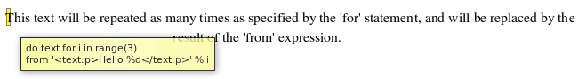
Here's the result. Note that within the from clause you may use the iterator variable (i, in this case) defined by the for statement.
Actually, when you don't specify a from clause in a statement, pod generates an implicit from clause whose result comes from the odt chunk that is the target of the statement.
I agree with you: these examples are not very useful. Moreover, it requires you to have some knowledge of the ODF syntax. You also have to take care about the namespaces you specify (text:, style:, fo:, etc): they must match the ones used in your pod template. But these examples illustrate how from clauses work and how you may go further by yourself if pod does not implement (yet ;-)) what you need.
The remaining of this page presents much more useful use cases, in the form of built-in pod functions that you may use within from clauses. Indeed, a bunch of functions is inserted by default to every context given to the pod renderer.
One of these functions is the xhtml function, that allows to convert chunks of XHTML documents (given as strings in the context) into chunks of OpenDocument within the resulting OpenDocument. This functionality is useful, for example, when using pod with systems like Plone, that maintain a part of their data in XHTML format (Kupu fields, for example).
Suppose you want to render this chunk of XHTML code at some place in your pod result:
| XHTML code | XHTML rendering (Plone) |
|---|---|
|
<p>Te<b>s</b>t1 : <b>bold</b>, i<i>tal</i>ics, exponent<sup>34</sup>, sub<sub>45</sub>.</p> <p>An <a href="http://www.google.com">hyperlink</a> to Google.</p> <ol><li>Number list, item 1</li> <ol><li>Sub-item 1</li><li>Sub-Item 2</li> <ol><li>Sub-sub-item A</li><li>Sub-sub-item B <i>italic</i>.</li></ol> </ol> </ol> <ul><li>A bullet</li> <ul><li>A sub-bullet</li> <ul><li>A sub-sub-bullet</li></ul> <ol><li>A sub-sub number</li><li>Another.<br /></li></ol> </ul> </ul> <h2>Heading<br /></h2> Heading Blabla.<br /> <h3>SubHeading</h3> Subheading blabla.<br /> |
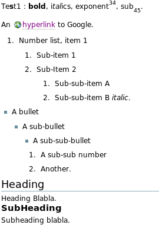 |
pod comes with a function named xhtml that you may use within your pod templates, like this:
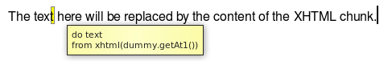
In this example, the name dummy is available in the context, and dummy.getAt1() produces a Python string that contains the XHTML chunk shown above. This string is given as paremeter of the built-in pod xhtml function.
Note that if you specify a key "xhtml" in the context given to the pod renderer, the default "xhtml" function will be overridden by the value specified in the context.
The rendering produces this document:
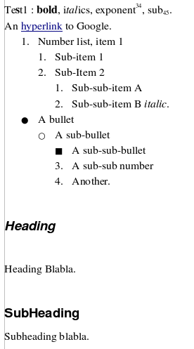
The OpenDocument rendering is a bit different than the XHTML rendering shown above. This is because pod uses the styles found in the pod template and tries to make a correspondence between style information in the XHTML chunk and styles present in the pod template. By default, when pod encounters a XHTML element:
You have the possibility to customize this behaviour by defining styles mappings (see below).
You can define styles mappings at two different levels. First, when you create a renderer instance, you may give a styles mapping to the parameter stylesMapping, which is the global style mapping (The renderer's constructor is defined here). A styles mapping is a Python dictionary whose keys are either CSS class names or XHTML element names, and whose values are "display names" of OpenDocument styles that must be present in the pod template. Every time you invoke the xhtml function in a pod template, the global styles mapping comes into play.
Note that in an OpenDocument document, OpenOffice stores only the styles that are used in the document (I don't know how others OpenDocument-compliant word processors behave). The styles names ("Heading 1", "Standard"...) that appear when opening your template with OpenOffice, for example, are thus a super-set of the styles that are really recorded into your document. You may consult the list of available styles in your pod template programmatically by calling your pod renderer's getStyles method.
In a styles mapping you can also define a special key, h*, and define a positive or negative integer as value. When pod tries to establish a style correspondance based on outline level, it will use this number. For example, if you specify a styles mapping = {'h*' : -1}, when encountering element h2 (that does not define a "class" attribute), if an OpenDocument with an outlevel of 2-1 is found (ie "Heading 1"), it will be used.
Second, each time you invoke the xhtml function in a pod template, you may specify a local styles mapping in the parameter named stylesMapping, like shown below.
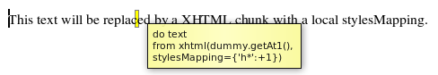
Local styles mappings override what you have (potentially) defined in the global styles mapping.
At present, the XHTML elements listed below may not be "styled-mapped" (they may not be present in styles mappings) because pod uses it own automatically-generated OpenDocument styles:
This can be problematic if, for instance, you want to use special style-related attributes, specially for li elements that correspond to paragraphs. This is why any pod template includes some predefined styles that may apply to these elements. The following table shows them, grouped by element type.
| Element | Available style(s) | Description |
|---|---|---|
| ol | The default pod style only. | No pod-specific style is proposed at present. The unique default pod style of this element will always be used. |
| ul | The default pod style only. | No pod-specific style is proposed at present. The unique default pod style of this element will always be used. |
| li | podItemKeepWithNext | This specific style adds the characteristic "Keep with next" to the target li paragraph. This way, the paragraph will always be present. This works for lis inside uls or ols. |
| a | The default pod style only. | No pod-specific style is proposed at present. The unique default pod style of this element will be used. |
In order to use one of those styles, you can specify its name in the "class" attribute of the target element, or you can go through a global or local styles mapping. For example, if you need a li element that will always stay on the same page as the paragraph below him, you can write <li class="podItemKeepWithNext"></li>.
By default, the xhtml function uses a standard XML parser (the Python "expatreader" parser) for parsing the XHTML code. This parser knows only about the 5 legal XML entities: & (&), "e; ("), ' ('), < (<) and > (>). If an XHTML entity is encountered (like é), the XML parser produces an error (numeric entities like ê seem to be supported). For solving this problem, pod may use another parser that comes with PyXML and resides in xml.sax.drivers2. If this parser is available in your Python interpreter, pod will use it and configure it: XHTML entities will then be supported and correctly converted. Type import xml.sax.drivers2 in your Python shell; if no exception is raised, the parser is installed and will be used by pod.
The document function allows you to integrate, into the ODT result, images or files that come from external sources. Here is the function signature; the table below explains each parameter. Examples follow.
document(content=None, at=None, format=None, anchor='as-char')
| Parameter | Description | ||||||||||||
|---|---|---|---|---|---|---|---|---|---|---|---|---|---|
| content | If you have the image or file content available in memory or via a file handler, use this parameter. content may hold the whole (binary) image or file content, or be an (opened) Python file instance (a Python file instance is obtained by calling the built-in Python method file or open (open being an alias for file). | ||||||||||||
| at | If your image or file is available on disk, do not use the previous parameter and specify the file path in this parameter. | ||||||||||||
| format | When using parameter at, pod guesses the file format based on file extension. But if you use parameter content, you must specify the file format here. The format may be a file extension (without the leading dot) or a MIME type. The currently supported formats are:
|
||||||||||||
| anchor | This parameter is used for images only. It determines the way to anchor the image in the result. Possible values are:
|
The following example shows a POD template part that integrates a PNG image from disk.
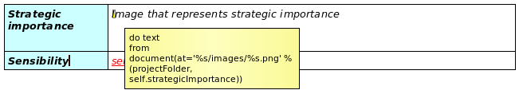
(Note that the from clause must be on a single line.). This could be rendered this way for example:

The following ODT template part reads PDF and ODT files from a database (The ZODB; it is a Plone site) and integrates them in the pod result.
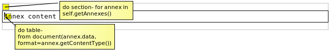
For those who know Plone, annex is an instance of ATFile: annex.data returns its binary content, while annex.getContentType() returns is MIME type.
In future Appy releases:
Pod built-in functions are designed to be used within pod statements (from clauses). If you try to use them in pod expressions, you will get strange results. The example below uses the xhtml function in a pod expression.
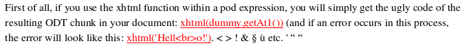
If dummy.getAt1() produces the XHTML chunk <p>Test1<br/></p>, the result will look like this:
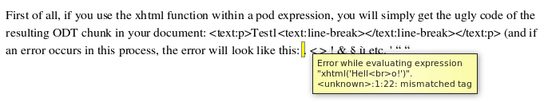